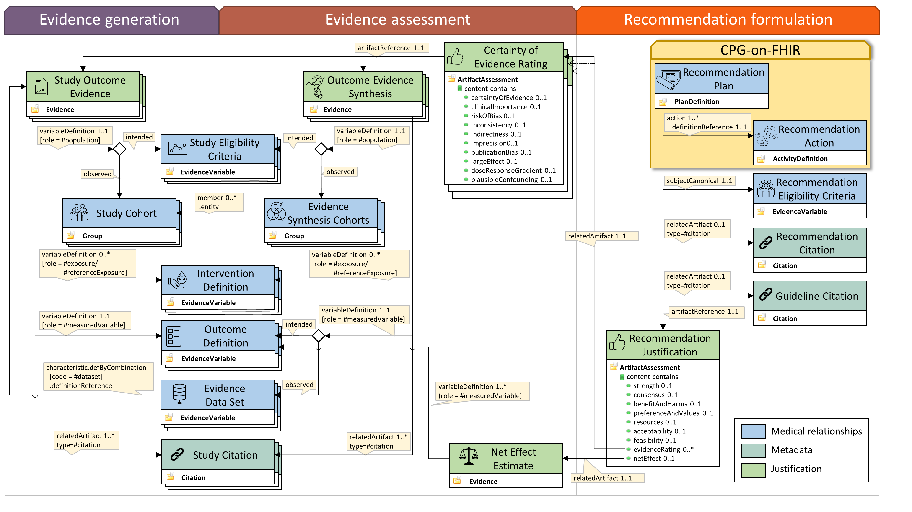

Clinical Practice Guidelines (CPG) on EBMonFHIR
1.2.0 - qa-preview
Clinical Practice Guidelines (CPG) on EBMonFHIR
1.2.0 - qa-preview
This page is part of the CPG-on-EBMonFHIR Implementation Guide (1.2.0).
| Official URL: https://www.netzwerk-universitaetsmedizin.de/fhir/cpg-on-ebm-on-fhir/ImplementationGuide/de.netzwerk-universitaetsmedizin.ebm-cpg | Version: 1.2.0 | |||
| Draft as of 2025-03-04 | Computable Name: CPGonEBMonFHIR | |||
This implementation guide describes an approach to using evidence-based medicine on FHIR (EBMonFHIR) in combination with FHIR Clinical Guidelines to represent evidence-based clinical practice guidelines including the evidence upon which the recommendations are based. The approach is based on the PICO (population, intervention, comparator, outcome) framework and the GRADE (Grading of Recommendations Assessment, Development and Evaluation) approach.
This implementation guide is based on FHIR R5 (5.0.0).
The following elements are required to represent a clinical practice guideline recommendation for automated clinical decision support systems:
| Name | FHIR Base Resource | Description | References |
|---|---|---|---|
| Recommendation | PlanDefinition | Representation of a single guideline recommendation. | Recommendation Plan, Guideline Citation, Recommendation Citation. |
| Recommendation Plan | PlanDefinition | Description of a recommended intervention addressed in a specific guideline recommendation. | Intervention Activities specified in the guideline recommendation; Recommendation Eligibility Criteria defining the group of patients to which the recommendation applies to; Recommendation Justification providing the justification of the recommendation; Guideline Citation, Recommendation Citation. |
| Recommendation Action | ActivityDefinition | Definition of an activity that is part of an intervention in the context of a clinical practice guideline recommendation. | - |
| Recommendation Eligibility Criteria | EvidenceVariable | Description of the population to which a specific guideline recommendation applies. | - |
The following profiles are used to represent the evidence upon which a clinical practice guideline recommendation is based:
| Name | FHIR Base Resource | Description | References |
|---|---|---|---|
| Study Outcome Evidence | Evidence | Evidence statistics generated from a single study or systematic review regarding a clinical question. | Study Eligibility Criteria, Intervention Definition, Outcome Definition, Study Citation |
| Study Eligibility Criteria | EvidenceVariable | Intended definition of the patient group for which evidence or was generated or evidence synthesis was performed. | - |
| Study Cohort | Group | Actual composition of the patient group for which the evidence was generated. | - |
| Outcome Evidence Synthesis | Evidence | A single evidence for an outcome from an evidence synthesis (e.g., meta-analysis). | Evidence Synthesis Cohorts, Evidence Data Set |
| Evidence Synthesis Cohorts | Group | Actual composition of the patient group for which evidence synthesis was performed. | - |
| Intervention Definition | EvidenceVariable | Definition of an intervention or comparison with respect to which evidence was generated. | - |
| Outcome Definition | EvidenceVariable | Definition of the outcome for which evidence was generated. | - |
| Evidence Data Set | EvidenceVariable | Definition of the outcome used as the observed measured variable for an evidence synthesis. | - |
| Outcome Evidence | Evidence | Evidence statistics generated from a single study or systematic review regarding a clinical question. | Study Eligibility Criteria, Intervention Definition, Outcome Definition, Study Citation |
| Study Eligibility Criteria | EvidenceVariable | Definition of the patient group for which evidence was generated. | - |
The following profiles are used to represent the assessment of evidence which justify the recommendation:
| Name | FHIR Base Resource | Description | References |
|---|---|---|---|
| Recommendation Justification | ArtifactAssessment | Rating of the recommendation given all evidence for all considered outcomes. | Recommendation Plan, Certainty of Evidence Rating, Net Effect Estimate |
| Certainty of Evidence Rating | ArtifactAssessment | Rating of the evidence for individual outcomes. | Outcome Evidence |
| Net Effect Estimate | EvidenceVariable | Description of the net effect of a guideline recommendation. | (Expected) Outcomes of a guideline recommendation. |
Additionally, the following profiles are used to bundle recommendations and resources:
| Name | FHIR Base Resource | Description | References |
|---|---|---|---|
| Clinical Practice Guideline | Composition | Composition of several individual guideline recommendations | Recommendation Plan, Guideline Citation |
| Guideline Bundle | Bundle | Bundle of all resources of a single clinical practice guideline. | All other resources in this IG. |
The following diagram provides an overview of the different profiles used in this implementation guide and their relationship:

Reprinted from Journal of Biomedical Informatics, Lichtner, G., Alper, B. S., Jurth, C., Spies, C., Boeker, M., Meerpohl, J. J., & von Dincklage, F. (2023). “Representation of evidence-based clinical practice guideline recommendations on FHIR”. 2023., with permission from Elsevier. DOI: https://doi.org/10.1016/j.jbi.2023.104305. Journal homepage: https://www.sciencedirect.com/journal/journal-of-biomedical-informatics.
The following diagram provides a more detailed view on the important fields of the profiles and their relationships. For a consistent detailed view, please visit the pages of the individual profiles.
In short, a single guideline recommendation describes a specific group of patients (the “population”), for which a certain treatment (or the absence from treatment) is recommended (the “intervention”). As the guideline recommendations are based on meta-analyses of clinical studies, the expected outcome of the recommended intervention on the patients may also be encoded. This additionally allows to specify the net effect of the recommendation by weighting the individual outcomes by their relative importance. For more information on the net effect, see Alper, B. S. et al. Defining certainty of net benefit: a GRADE concept paper. BMJ Open 9, e027445 (2019).
Multiple recommendations represented in the here shown format can be found at the CODEX+ CELIDA Recommendations repository.
Lichtner, G., Alper, B. S., Jurth, C., Spies, C., Boeker, M., Meerpohl, J. J., & von Dincklage, F. (2023). “Representation of evidence-based clinical practice guideline recommendations on FHIR”. Journal of Biomedical Informatics (2023). https://doi.org/10.1016/j.jbi.2023.104305.
IG © 2021+ Universitätsmedizin Greifswald. Package de.netzwerk-universitaetsmedizin.ebm-cpg#1.2.0 based on FHIR 5.0.0. Generated 2025-03-04
Links: Table of Contents |
QA Report |
Issues |
Submit an issue |
Version History |
 |
|